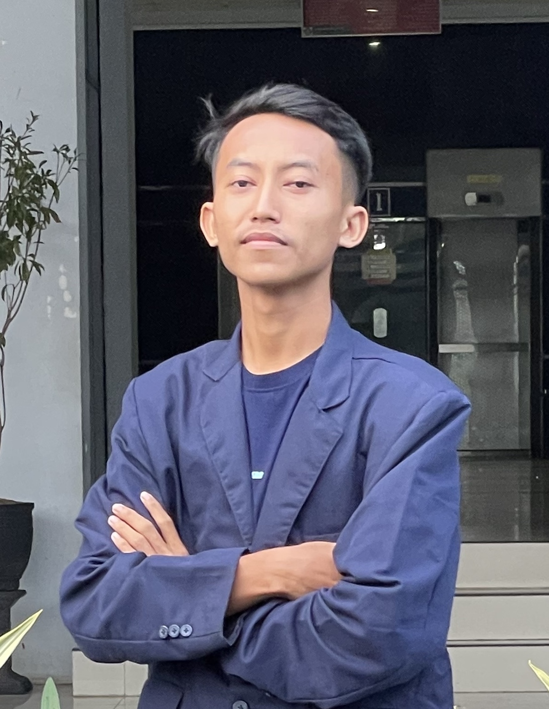

Hello, I'm
Muhammad Syahril
Eka Pratama
Telecommunications & Digital Technology Enthusiast
I specialize in IoT solutions and telecommunication networks, building the bridge between hardware and software to solve real-world problems.

About Me
I am a passionate Telecommunications and Digital Technology student at Politeknik Negeri Malang (Polinema). My journey revolves around bridging the gap between hardware and software, specializing in Internet of Things (IoT) and Embedded Systems.
My expertise extends beyond hardware assembly. From developing AI-powered computer vision models and crafting Kotlin companion apps, to deep-level OS kernel configurations (Hackintosh), I thrive on building innovative, end-to-end solutions that push the boundaries of technology.
Featured Projects
HiJack: IoT-Based Smart Anti-Hypothermia Jacket (PKM 2025)
Jul 2025 - Oct 2025An IoT-based wearable smart jacket designed to prevent hypothermia in mountain climbers. It integrates hardware sensors and a mobile app to automate heating based on body temperature.
- Role: Led end-to-end hardware prototyping (circuit design, sensor assembly, and functional testing).
- Grant: Funded by the Ministry of Education via PKM 2025.
- HAKI: Secured dual Intellectual Property Rights (Hardware & Mobile App).
Eco-Bin: AI Smart Waste Classification
Jan 2026 - PresentAn intelligent, automated waste classification system bridging advanced deep learning with edge computing devices for real-time object detection.
- Role: Core Technical Developer
- Tech: MQTT Protocol, Distributed Networks, Model Synchronization, Cloud-to-Edge Sync.
ESP32 Smart Quick Shifter & Launch Control
May 2026 - PresentAn ESP32-based automotive control system engineered for motorcycle tuning. Utilizes Hall effect sensors for precise gear-shift detection and engine ignition-cut timing.
- Features: Quick Shifter, Launch Control, Pit Limiter.
- Testing: Hardware-in-the-loop testing in high-vibration environments.
Kido Smart Ecosystem
IoT & Android AppAn integrated ecosystem featuring an ESP32-based smart badge terminal for RFID attendance/badge claiming and a companion Kotlin Android app for parents to monitor activities and pair devices.
- Hardware: C++, ESP32, PlatformIO, RFID MFRC522, I2C LCD.
- Software: Kotlin (Android App), Firebase Realtime Database.
CaloriLens
Machine LearningAn Artificial Intelligence project focusing on computer vision and deep learning to recognize food objects from images for calorie tracking and estimation.
- Tech Stack: Python, Jupyter Notebook, Computer Vision.
- Focus: Data Science, Model Training, Object Detection.
Honors & Awards
1st Place Champion - ISSIC 2025
May 2025Secured 1st Place in University Category and IoT for Health and Safety Sub-Theme at the IoT Smart Solution Innovation Challenge. Evaluated on hardware assembly precision and code troubleshooting speed.
Best Technology - PBL Expo Polinema
Nov 2025Awarded "Best Technology" as part of Tim Bolo Suryo, outperforming numerous project-based learning initiatives based on engineering complexity and real-world impact.
2nd Place - National UI/UX Design (IT-CAS)
Nov 2025Secured 2nd Place at IT-Competition AMIKOM Surakarta by developing a user-centric digital product prototype using comprehensive UI/UX methodologies and Figma.
Bronze Medalist - National Essay
Feb 2026Achieved Bronze at Forum Indonesia Muda (FIM) 2 for articulating strategic, innovative concepts and academic arguments addressing contemporary issues.
Other Experience
macOS Sequoia on ThinkPad T480
Systems ConfigurationA high-stability Hackintosh implementation focusing on hardware compatibility and system performance. Bypassed macOS Sequoia's limited support for Intel wireless hardware through advanced spoofing and root patching techniques.
- Graphics & Audio: Framebuffer patching for Intel UHD 620 via WhateverGreen and AppleALC (Layout ID 86) for HD Audio.
- Power Management: Custom ACPI with `SSDT-BATX` for dual-battery and `CPUFriend` for efficient CPU frequency scaling.
- Networking & I/O: OCLP root patching for Intel WiFi, Thunderbolt 3 hotplug (`SSDT-TB3`), and mapped I2C trackpad.
- Stability: Resolved sleep/wake loops with `SSDT-GPRW` and handled CMOS boot issues via `RTCMemoryFixup`.
My Skills
Let's Connect
I'm always open to discussing new projects, creative ideas or opportunities to be part of your visions.